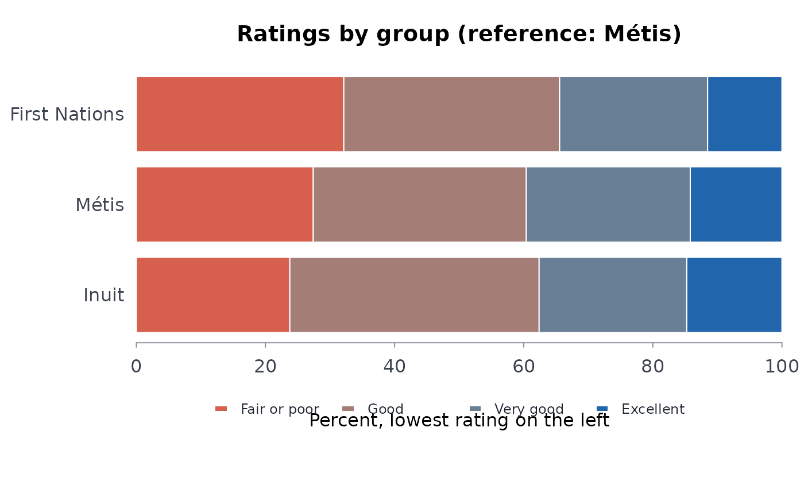

Compare rated scales (perceived mental health, life satisfaction) between groups
Source:R/indigenous_mental_health.R
ordcmp.RdFor a rated scale published as the percentage in each category with its confidence limits (perceived mental health from poor to excellent, life satisfaction from 0 to 10, agreement with a statement), the probability that a person in each group rates higher than a person in the reference group, with its confidence interval: a comparison of the whole distribution, not of one category cut from it.
Usage
ordcmp(
data,
grp,
cat,
est,
lower,
upper,
lvls,
ref,
qual = NULL,
conflvl = 0.95,
pooled = NULL
)Arguments
- data
A data frame, one row per group and category (as
scestsgives, filtered to one geography, age group and gender).- grp, cat, est, lower, upper
Column names: the group, the category, the share in it (percent or proportion: only relative shares matter) and its published limits on the same scale.
- lvls
The categories, from the lowest (least favourable) to the highest.
- ref
The label of the reference group (required: any group of
data).- qual
Optional column of quality flags (see
qltyrcd).- conflvl
Confidence level of the published limits and of the result (default 0.95).
- pooled
Optional labels of rows that pool other groups (see
indgap).
Value
A data frame of class rmbl_ordinal_compare: group,
reference, probbet, lower, upper, delta,
neff, neffref, usewithcau, poogrp;
the attribute shares is the matrix of shares (groups by levels), which
plot() draws.
Details
With shares \(p_i\) in the group and \(q_j\) in the reference over categories ordered from lowest to highest, the probability of a higher rating, ties counted half, is \(A = \sum_i p_i (Q_{i-1} + q_i / 2)\) with \(Q_i\) the reference's cumulative shares and \(Q_0 = 0\): the Mann-Whitney probability, equal to \(\alpha / (1 + \alpha)\) for Agresti's (1980) generalized odds ratio \(\alpha\) with ties split equally, and to the mean ridit of the group with the reference as the standard (Bross 1958). 0.5 is no difference; \(2A - 1\) is Cliff's \(\delta\), the share rating higher less the share rating lower.
Its variance is that of the two-sample U statistic, \(\sigma_1^2 / n_1 + \sigma_0^2 / n_0\), with \(\sigma_1^2\) the variance over the group of each category's placement in the reference and \(\sigma_0^2\) the converse (Brunner and Munzel 2000). The sample sizes are the effective ones the published limits imply: for each category, \(n = p(1 - p) / s^2\) with \(s\) the standard error from the limits' width, taking the median over the categories. That carries the design effect of the survey's weights and clusters, which the counts of persons (population totals) do not. The interval is built on the logit scale, so it stays inside 0 and 1.
The categories given in lvls are taken as the whole scale: rows for totals,
for combined categories (“Excellent or very good”) and for “not
specified” are left
out, and the shares are rescaled to sum to one over the levels. A group with a
suppressed or missing category is not compared, since its distribution is unknown; one
with an E category (in the group or the reference) is compared and marked, and
one whose published interval misses its own estimate is not compared.
A higher rating means better only on a scale that runs that way. Give lvls
from the least to the most favourable so that probbet reads as its name
says.
References
Agresti A (1980). Generalized odds ratios for ordinal data. Biometrics 36(1):59-67. doi:10.2307/2530495
Bross IDJ (1958). How to use ridit analysis. Biometrics 14(1):18-38. doi:10.2307/2527727
Brunner E, Munzel U (2000). The nonparametric Behrens-Fisher problem: asymptotic theory and a small-sample approximation. Biometrical Journal 42(1):17-25. doi:10.1002/(SICI)1521-4036(200001)42:1<17::AID-BIMJ17>3.0.CO;2-U
Examples
# Self-perceived mental health, 15 years and older, Canada, 2022 (table 41-10-0067-01)
mh <- indiex("mentalhealth")
mh <- mh[mh$region == "Canada", ]
oc <- ordcmp(mh, "group", "rating", "estimate", "lower", "upper",
lvls = c("Fair or poor", "Good", "Very good", "Excellent"),
ref = "M\u00e9tis", qual = "quality")
oc
#> group reference probbet lower upper delta neff
#> 1 First Nations Métis 0.4653023 0.4531475 0.4774984 -0.0693954 4021.444
#> 2 Inuit Métis 0.5062337 0.4928231 0.5196353 0.0124674 2791.908
#> neffref usewithcau poogrp
#> 1 3884.405 FALSE FALSE
#> 2 3884.405 FALSE FALSE
plot(oc)
